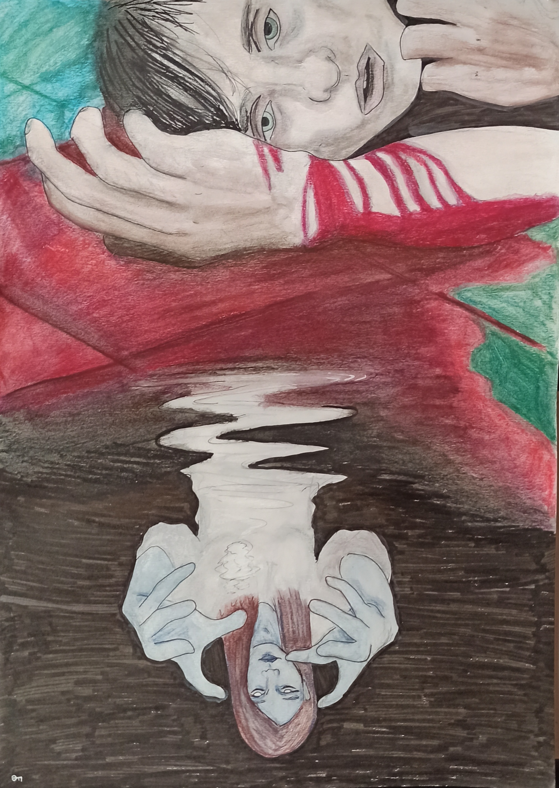
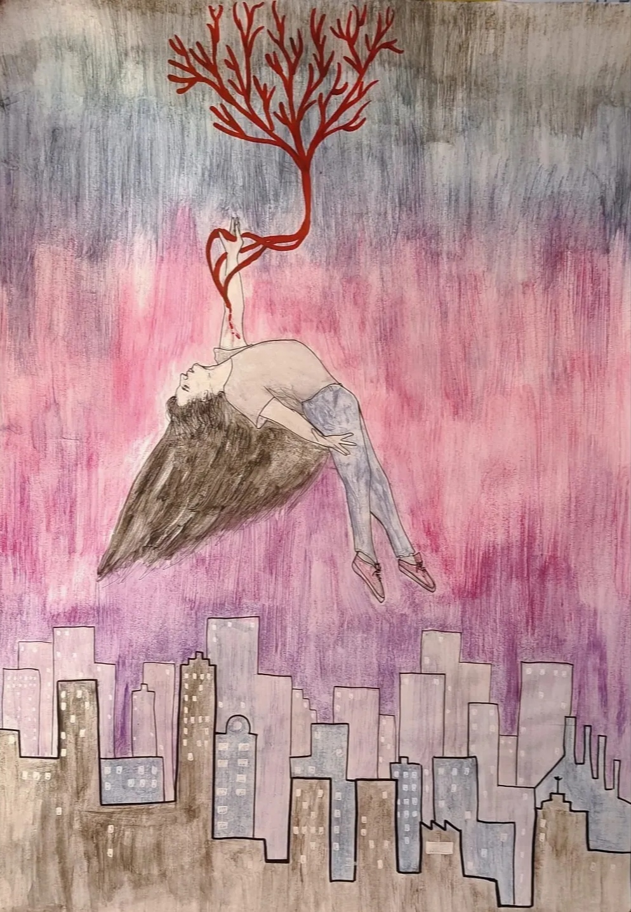
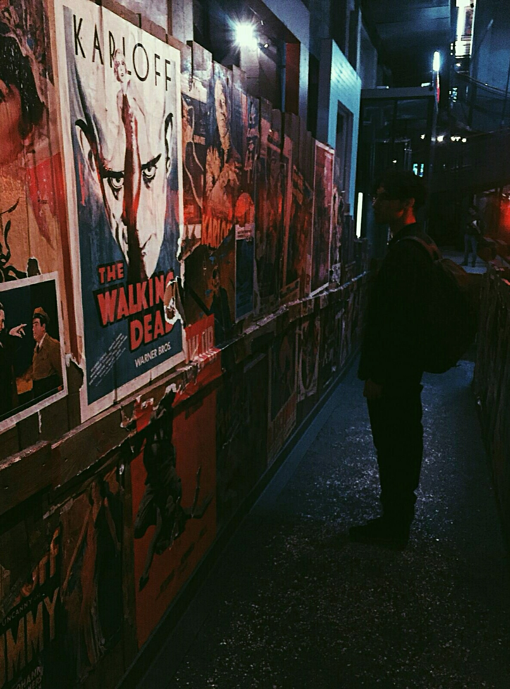

Chi Sono
Chi Sono Mi chiamo Samuele Toro, sono un aspirante programmatore web, scrittore e appassionato di cinema e letteratura. Dopo alcune esperienze lavorative ho deciso di prendermi per mano e intraprendere un nuovo percorso, diverso da tutti quelli precedenti. Ed eccomi qui, dopo un viaggio dentro me stesso e dentro questo mondo in continuo sviluppo, pronto ad aiutarti al massimo delle mie capacità in caso avessi bisogno del mio aiuto.
I miei Interessi

Entropia
Entropia è il sogno di un uomo che cerca di salvare quel che rimane della sua vita dopo una perdita insopportabile. Attraverso un viaggio dentro se stesso ritroverà la sua verità e il suo posto nella realtà.
Angeli Perduti
Angeli Perduti è il racconto lucido e delirante di due persone innamorate e squarciate che danzano tra l'onirico e la realtá, tentando di fare ciò che per noi è impossibile: conciliarsi con il mondo.

"Chi ci sta uccidendo, derubandoci della vita e della luce, beffandoci con la visione di quello che avremmo potuto conoscere? La nostra rovina è di beneficio alla terra, aiuta l'erba a crescere, il sole a splendere?"
La Sottile Linea Rossa

"Il cinema è il modo più diretto per entrare in competizione con Dio."
Federio Fellini